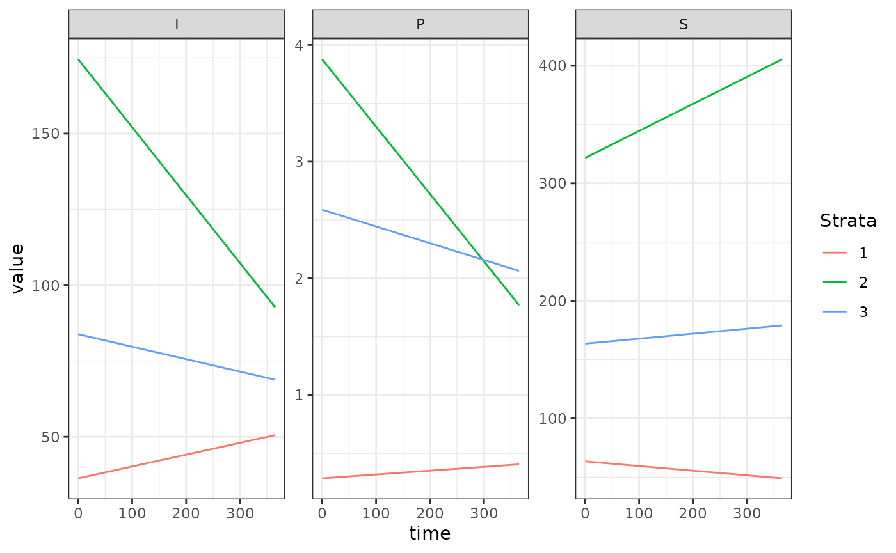

SIP_xde (Susceptible-Infected-Prophylaxis) Human Model
Source:vignettes/human_sip.Rmd
human_sip.RmdThe basic SIP_xde (Susceptible-Infected-Prophylaxis) human model model fulfills the generic interface of the human population component. It is a reasonable first complication of the SIS human model. This requires two new parameters, , the probability a new infection is treated, and the duration of chemoprophylaxis following treatment. remains a column vector giving the number of infectious individuals in each strata, and the number of treated and protected individuals.
Differential Equations
The equations are formulated around the FoI, . Under the default model, we get the relationship , where is the daily EIR:
Example
Here we run a simple example with 3 population strata at equilibrium.
We use ramp.xds::make_parameters_X_SIP_xde to set up
parameters. Please note that this only runs the human population
component and that most users should read our
fully worked example to run a full simulation.
We use the null (constant) model of human demography ( constant for all time).
The Long Way
nStrata <- 3
H <- c(100, 500, 250)
nPatches <- 3
residence <- 1:3
params <- make_xds_template("ode", "human", nPatches, 1, residence)
b <- 0.55
c <- 0.15
r <- 1/200
eta <- c(1/30, 1/40, 1/35)
rho <- c(0.05, 0.1, 0.15)
xi <- rep(0, 3)
Xo = list(b=b,c=c,r=r,eta=eta,rho=rho,xi=xi)
class(Xo) <- "SIP"
eir <- 2/365
xde_steady_state_X(eir*b, H, Xo) ->ss
ss
#> $S
#> [1] 63.40658 321.64258 163.59643
#>
#> $I
#> [1] 36.30678 174.48008 83.81516
#>
#> $P
#> [1] 0.2866325 3.8773352 2.5884093
Xo$I <- ss$I
Xo$P <- ss$P
params = make_Xpar("SIP", params, 1, Xo)
params = make_Xinits(params, H, 1, Xo)
MYZo = list(
MYZm = eir*H
)
params = make_MYZpar("trivial", params, 1, MYZo)
params = make_MYZinits(params, 1)
params <- setup_Hpar_static(params, 1)
params = make_Lpar("trivial", params, 1)
params = make_Linits(params, 1)
params = make_indices(params)
xde_steady_state_X(eir*b, H, params$Xpar[[1]])
#> $S
#> [1] 63.40658 321.64258 163.59643
#>
#> $I
#> [1] 36.30678 174.48008 83.81516
#>
#> $P
#> [1] 0.2866325 3.8773352 2.5884093
out <- deSolve::ode(y = y0, times = c(0, 365), xde_derivatives, parms= params, method = 'lsoda')
out1<- out
colnames(out)[params$ix$X[[1]]$S_ix+1] <- paste0('S_', 1:params$nStrata)
colnames(out)[params$ix$X[[1]]$I_ix+1] <- paste0('I_', 1:params$nStrata)
colnames(out)[params$ix$X[[1]]$P_ix+1] <- paste0('P_', 1:params$nStrata)
out <- as.data.table(out)
out <- melt(out, id.vars = 'time')
out[, c("Component", "Strata") := tstrsplit(variable, '_', fixed = TRUE)]
out[, variable := NULL]
ggplot(data = out, mapping = aes(x = time, y = value, color = Strata)) +
geom_line() +
facet_wrap(. ~ Component, scales = 'free') +
theme_bw()
Using Setup
xds_setup_human(Xname="SIP", nPatches=3, residence = 1:3, HPop=H, Xopts = Xo, MYZopts = MYZo) -> test_SIP_xde
xds_solve(test_SIP_xde, 365, 365)$outputs$orbits$deout -> out2
approx_equal(out2,out1)
#> logical(0)